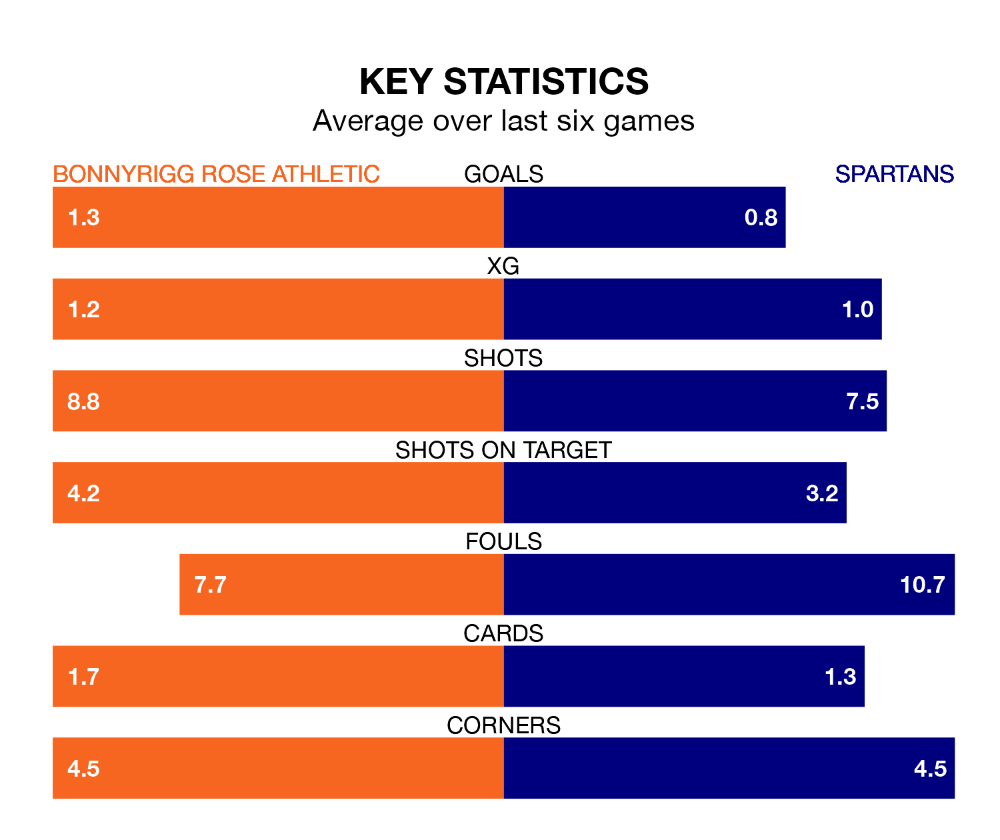

Struggling Bonnyrigg Rose Athletic face Spartans at New Dundas Park on Saturday looking to build on a win in their last league outing.
After securing all three points with a 4-1 victory over East Fife on April 13, Bonnyrigg Rose sit eighth in League Two.
They travel to play a Spartans side fourth in the standings, who were held in their last match, 0-0 against Stranraer.
In Blair Henderson, Spartans have the league's most on-form striker so far this season. He has notched 17 goals in 32 appearances.
His goal rate of one every 158 minutes is quicker than that of Neil Martyniuk, Bonnyrigg Rose's top scorer with a goal every 227 minutes, and a total of 12 goals in 31 games.
With 48 goals in 33 games so far this season, the Spartans are the league's third-highest scorers with 1.5 goals per game. And they are conceding fewer than average, letting in 40 goals at a rate of 1.2 per game.
Athletic, meanwhile, are average scorers, with 1.3 goals per game. They have conceded 1.4 goals per game.
In the last 10 years, Bonnyrigg Rose and Spartans have played each other on seven occasions. Bonnyrigg Rose won three of them, Spartans one, and they drew three times.
On average, Bonnyrigg Rose scored 2.0 goals and the Spartans 1.6 in those matches.
Their last meeting was on March 5, when they played out a 2-2 draw.
The hosts are in disappointing form in League Two, with one win and two draws from their last six games.
With a win and four draws over that period, the away team's form is slightly better – they have taken seven points from 18, compared to Bonnyrigg Rose's five.
Updated: 11:31 (UTC), 15/04/24